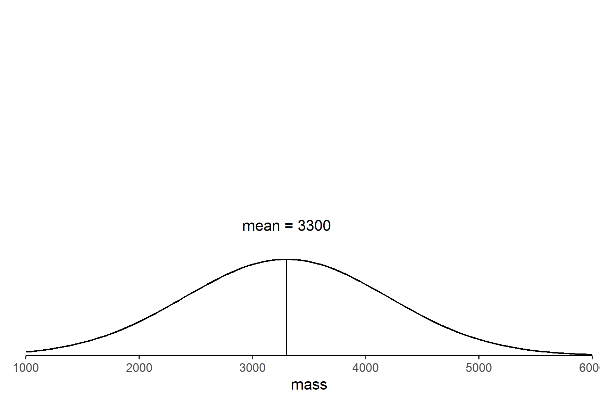
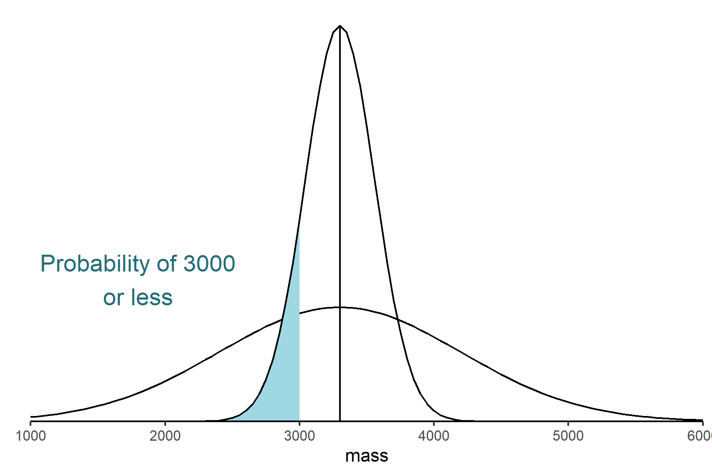
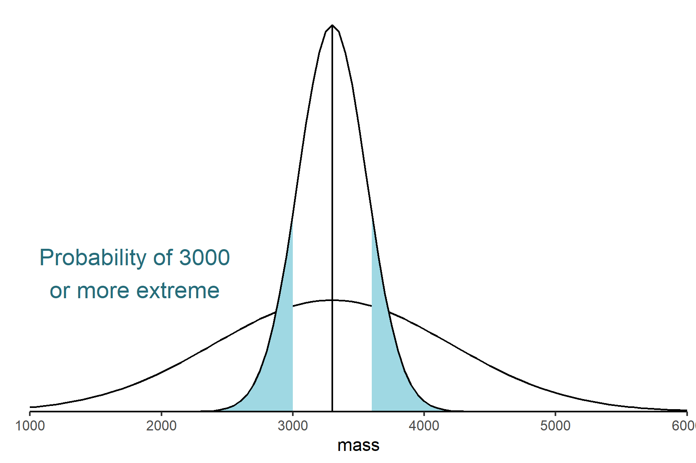

9 The logic of hyothesis testing
Warning
You are reading a work in progress. This page is a first draft but should be readable.
9.1 What is Hypothesis testing?
Hypothesis testing is a statistical technique which allows us to make inferences about the characteristics of a populations based on a sample. We almost always have to use samples because we are very rarely able to measure every observation in a population. For example, if we are interested in knowing if maternal poverty influences birth weight we would take a sample of babies born to mothers in poverty and determine if their weight, on average, was different to the national average. A statistical procedure is needed because even if maternal poverty has no effect, our sample average will differ from the national average just by chance.
9.2 Logic of hypothesis testing
The logic behind hypothesis testing follows these general steps:
- Formulating a “Null Hypothesis” denoted \(H_0\). The null hypothesis is what we expect to happen if nothing interesting is happening. It states that there is no difference between groups or no relationship between variables. In contrast, the “Alternative Hypothesis” (\(H_1\)) states that there is a significant difference between groups or a relationship between variables.
- Designing an experiment that generates data to test the null hypothesis.
- Determine the probability (the p-value) of getting our experimental data, or data more extreme, if \(H_0\) is true.
- Deciding whether to reject or not reject the \(H_0\) based on that probability:
- If p ≤ 0.05 we reject \(H_0\)
- If p > 0.05 do not reject \(H_0\)
If the null hypothesis is rejected it means we have evidence that \(H_0\) is untrue and support for \(H_1\). If the null hypothesis is not rejected, it means there is insufficient evidence to support the alternative hypothesis. Note that it does not mean that \(H_0\) is true, just that it cannot be discounted. Since, there is a real state to \(H_0\), it is either true or not true and we make a decision to reject or not reject it, we can be wrong.
9.2.1 Type I and type II errors
Type I and type II errors describe the cases when we make the wrong decision about the null hypothesis. These errors are inherent in the approach rather than mistakes you can prevent.
- A type I error occurs when we reject a null hypothesis that is true. This can be thought of as a false positive. It is a real error in that we have a real difference or effect. Since we use a probability of 0.05 to reject the null hypothesis, we will make a type I error 5% of the time.
- A type II error occurs when we do not reject a null hypothesis that is false. This is a false negative. It is not a real error in the sense that we only conclude we do not have enough evidence to reject the null hypothesis.
- If we reject a null hypothesis that is false we have not made an error.
- if we do not reject a null hypothesis that is true we have not made an error.

We can decrease our chance of making a type I error by reducing the the p-value required to reject the null hypothesis but this will increase our chance of making a type II error. We can decrease our chance of making a type II error by collecting enough data. The amount of data needed will depend on the the size of the effect relative to the random variation in the data.
9.3 Sampling distribution of the mean
The sampling distribution of the mean is a fundamental concept in hypothesis testing and constructing confidence intervals. Parametric tests such as regression, two-sample tests and ANOVA (all applied with lm()) are based on the sampling distribution of the mean. It is a theoretical distribution that describes the distribution of the sample means if an infinite number of samples were taken.
The key characteristics of the sampling distribution of the mean are:
The mean of the sampling distribution of the mean is equal to the population mean
The standard deviation of the sampling distribution of the mean is known the standard error of the mean and is always smaller than the standard deviation of the values. There is a fixed relationship between the standard deviation of a sample or population and the standard error of the mean: \(s.e. = \frac{s.d.}{\sqrt{n}}\)
When we are determining the probability of getting our experimental data, or data more extreme, if \(H_0\) is true, it is the sampling distribution of the mean that matters. We ask what is the probability of getting a sample mean like this.
9.3.1 Example
Let’s work through this logic using an example.
Question: National average birth weight is 3300 grams with an s.d. = 900 grams. Does maternal poverty influence birth weight?
- Set up the null hypothesis There is no effect of maternal poverty on birth weight so the mean of a sample of babies born into poverty is equal to the national average (Figure 9.2). This is written as \(H_0: \bar{x} = 3300\). The alternative hypothesis is that the sample mean is not equal to the national average. This is written as \(H_1: \bar{x} \neq 3300\).

We take a sample of \(n = 12\) women who live in poverty and determine the mean birth weight of their babies. We calculate \(\bar{x} = 3000 g\). This is lower than the national average but might we get a sample like that even if the null hypothesis is true?
Determine the probability (the p-value) of getting our experimental data, or more extreme data, if \(H_0\) is true. (Figure 9.3)


- Deciding whether to reject or not reject the \(H_0\) based on that probability. If the shaded area is less than 0.05 we reject the null hypothesis and conclude maternal poverty does influence birth weight. If the shaded area is more than 0.05 we do not reject the null hypothesis.